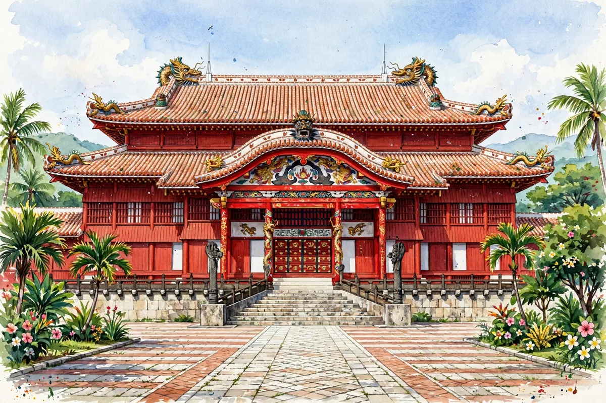

Shurijo Castle: What Makes the “Reiwa Restoration” of the Seiden Different from the Last One, Just Before Its November 23 Opening

This is a news article bringing you the latest developments concerning castles and shrines. Source: the Mainichi Shimbun (October 25, 2026). At Shurijo Castle in Naha City, Okinawa Prefecture, seven buildings including the Seiden burned down completely in the fire of October 31, 2019; the restoration work on the Seiden, which began in 2022, is now nearly complete, and it will open to the public from November 23. This blog has previously introduced the reconstruction festival and the schedule for the Seiden's public opening, but this time, as a roundup just before the opening, we focus on how this restoration differs from the previous one.
Shurijo Castle was the residence of the kings of the Ryukyu Kingdom, which lasted about 450 years, and the center of its politics and religious ceremonies. It was also a base for diplomacy, hospitably receiving envoys from Ming and Qing China, with which the kingdom carried on tributary trade. In 1879, through the “Ryukyu Disposition,” the Ryukyu Kingdom was annexed as part of Japan and became Okinawa Prefecture, and the king was made to leave Shurijo Castle. Tracing the castle's history reveals both its face as the capital of a kingdom and its course from the modern era onward.
Shurijo Castle suffered fires three times during the Ryukyu Kingdom period and was rebuilt each time. During the Second World War, an underground headquarters bunker of the Japanese military was built there, and in 1945 the castle was destroyed by attacks from the U.S. military. After the war, when the University of the Ryukyus, which had been built on the site, relocated, voices calling for the restoration of Shurijo Castle rose, and the Seiden was completed in 1992. The current restoration follows the basic design of the previous one, while also incorporating new knowledge learned from later research. It became clear that the paint used on the exterior walls and elsewhere involved “Kushijima-kiri bengara,” a naturally derived pigment, and the red became deeper than in the previous restoration. Another distinctive feature is that, to raise interest among prefectural residents and tourists, a viewing area was set up at the construction site under the theme of “visible reconstruction.”
This connects with themes in castle exam study. First, “gusuku and Shurijo Castle.” Shurijo Castle was the residence of the kings of the Ryukyu Kingdom and the center of politics, diplomacy and religious ceremonies. Second, “the philosophy of restoration.” Updating the appearance by incorporating new research findings while following the basic design shows that restoration is not simply a matter of copying the old appearance exactly as it was. Third, “the donations and human resources that support restoration.” According to Okinawa Prefecture, more than 6 billion yen in donations has been collected so far, and about 4.3 billion yen has been applied to part of the restoration costs. The remainder will be used for the restoration work on the Hokuden, Nanden and other buildings that will begin from here, and for training people to carry on traditional building techniques. Efforts to preserve a castle are about passing on techniques and people, not just buildings.
As the general opening on November 23 approaches, the restored appearance of the Seiden will come before the eyes of many people. When you visit Shurijo Castle, check the opening arrangements and closed days in Shurijo Castle Park's official announcements before you go.
A word from Tsurugi: Even for the same Seiden, as research advances, even the depth of its color changes — the “Reiwa restoration” is not just rebuilding, but an accumulation of knowledge. I want to check that red for myself when it opens on November 23.
We also share castle and shrine news and exam updates on our official social media. Follow @tabi.kentei.jp on Instagram and Threads to keep up with the latest information.
- Hikone Castle Chosen as Japan's World Heritage Nomination Candidate: A Step Toward Inscription and Crowdfunding to Repair Its Collapsed Stone Walls
- Shurijo Castle's Seiden Main Hall Opens to the Public at Noon on November 23: Adult Admission Rises to 1,000 Yen and Timed Reservations Apply Inside the Hall
- Kitano Tenmangu Shrine in Kyoto: Nighttime Maple Illumination at the Historic Odoi Momiji-en Garden from November 13
Recommended books for this article
Castle Guide
Samurai Castles: History / Architecture / Visitors' Guides
Hundreds of color photographs and close-up detail on Japan's most important surviving samurai castles — their history, design and military features, with guidance for visitors. The best single companion for castle sightseeing.
View at Barnes & NobleCheck the price at Barnes & Noble
Travel Guide
Lonely Planet Japan (Travel Guide), 19th Edition
Author: Lonely Planet
The standard Japan travel guide in its 19th edition — trip planning, itineraries, transport and on-the-ground detail. The practical backbone for a castle-and-shrine trip.
View at TargetCheck the price at Target
Book links on this page go to the retailers' product pages. Prices and availability are shown on the retailer's page.